Ons hart, onze drijfveer
Wat begon met het helpen van een hond groeide uit tot een gezamenlijke missie.
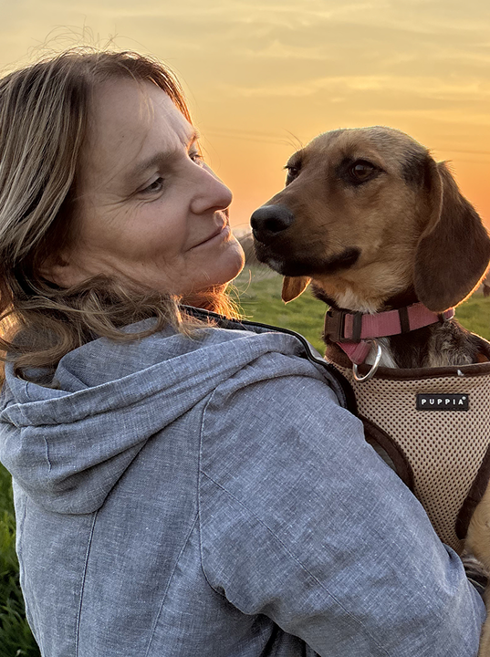
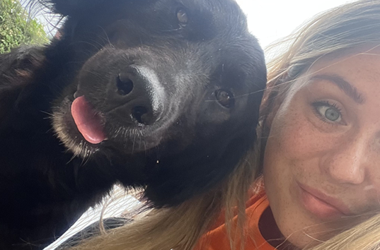
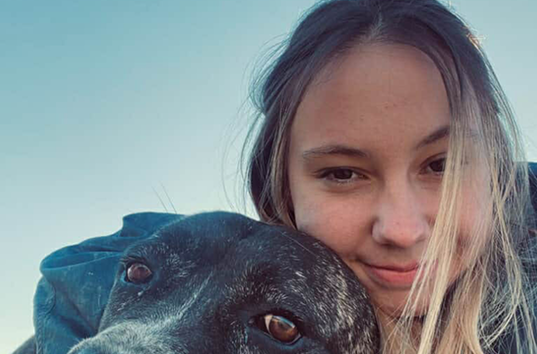
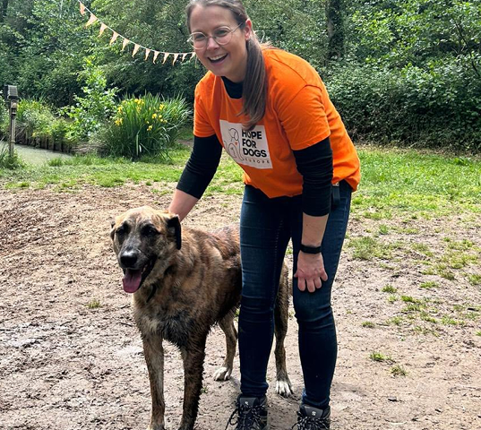
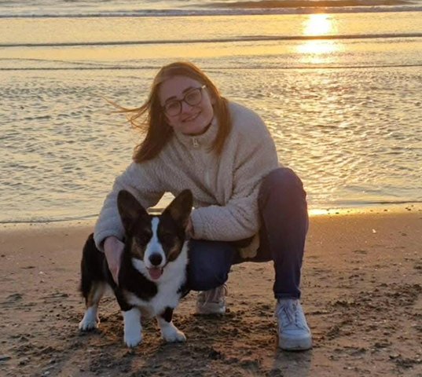
Er is geen overheid die ingrijpt. Geen vangnetten. Geen financiële steun. Alleen mensen zoals wij — en zoals jij.
Hope for Dogs draait volledig op vrijwilligers. We hebben geen grote organisatie achter ons en geen vaste subsidies die alles opvangen. Alles wat we doen, doen we naast ons werk en gezin — simpelweg omdat we geloven dat deze honden iemand nodig hebben die voor hen opkomt.
Onze kracht zit in samenwerking. Mensen uit verschillende landen, met verschillende achtergronden, maar met hetzelfde hart. Sommigen helpen met opvang, anderen met adopties, transport, medische zorg of fondsenwerving. Iedereen draagt bij op zijn of haar manier.
Het asiel
Ons asiel is gelegen in de grensstreek van Bosnië en Servië. In het asiel zetten we ons dagelijks in om de honden de aandacht te geven die ze nodig hebben. Ze zitten gelukkig niet alleen in kennels — we hebben een grote binnentuin waar ze vrij rond kunnen rennen en met elkaar kunnen spelen.
Onze kennels zitten vaak overvol. De meeste honden bij ons zijn gevonden langs de weg, op de vuilnisbelt of bij bedrijfsterreinen. Het is als dweilen met de kraan open — maar we doen het met heel veel liefde. De transformatie van een ziek, zwak zwerfhondje naar een hond met een liefdevol thuis maakt alles de moeite waard.
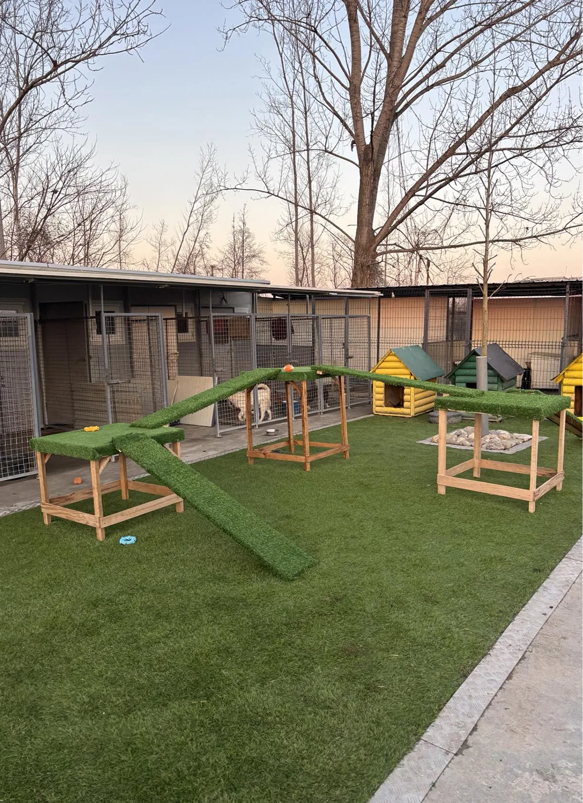
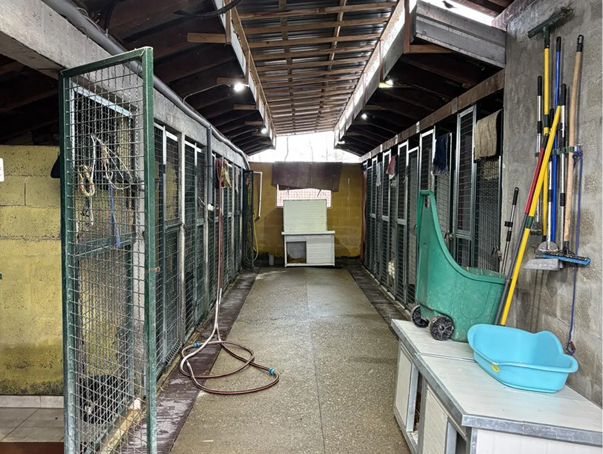
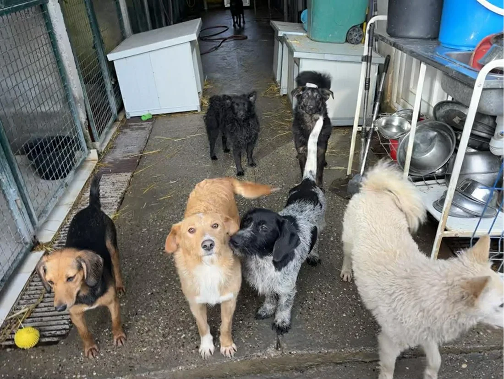
Van toen tot nu
Beetje bij beetje kunnen we het asiel verbeteren, we zijn er nog lang niet maar het is nu al een wereld van verschil.
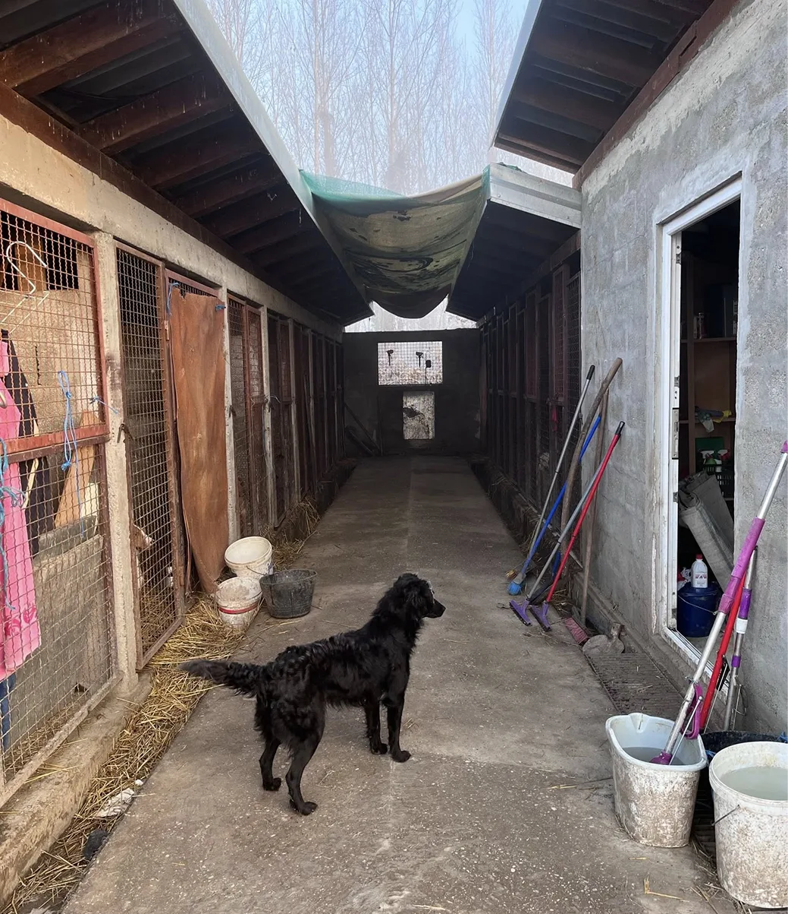
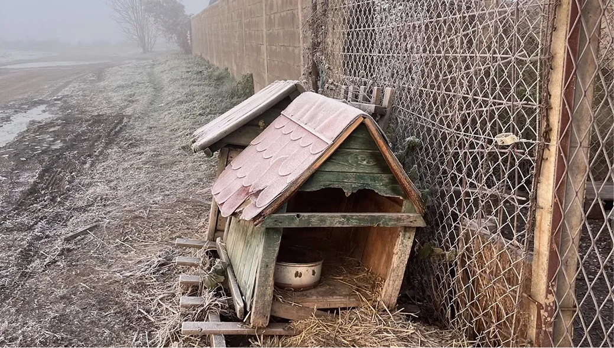
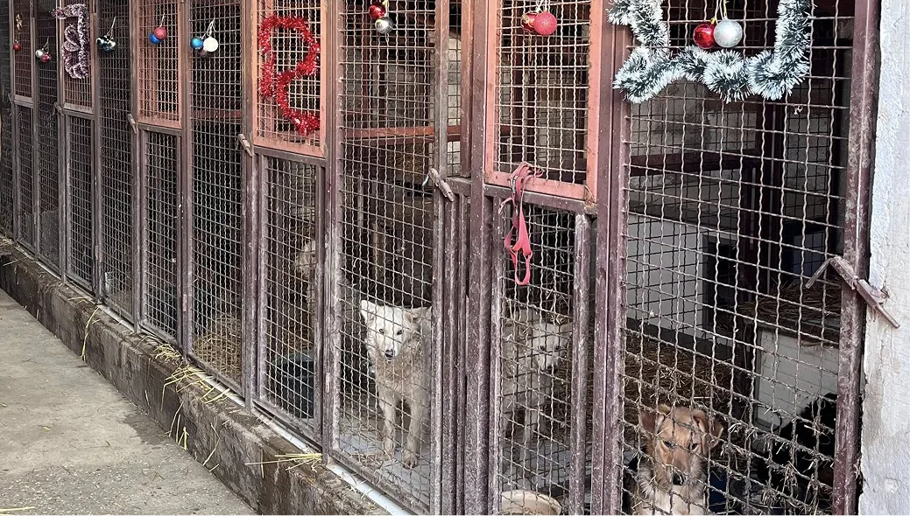
Het begon in 2021
Slavica begon als vrijwilliger op een klein stuk grond naast het gemeentelijke asiel. De gemeente stelde het ter beschikking aan een groep vrijwilligers, als eerste stap naar betere samenwerking. Het stelde weinig voor, maar het was een begin.
Er was geen elektriciteit en geen stromend water. 's Avonds gebruikten we de koplampen van de auto. In de winter bevroor de waterpomp regelmatig. We sleepten emmers en flessen water aan, zwaar en ijskoud, omdat het moest.
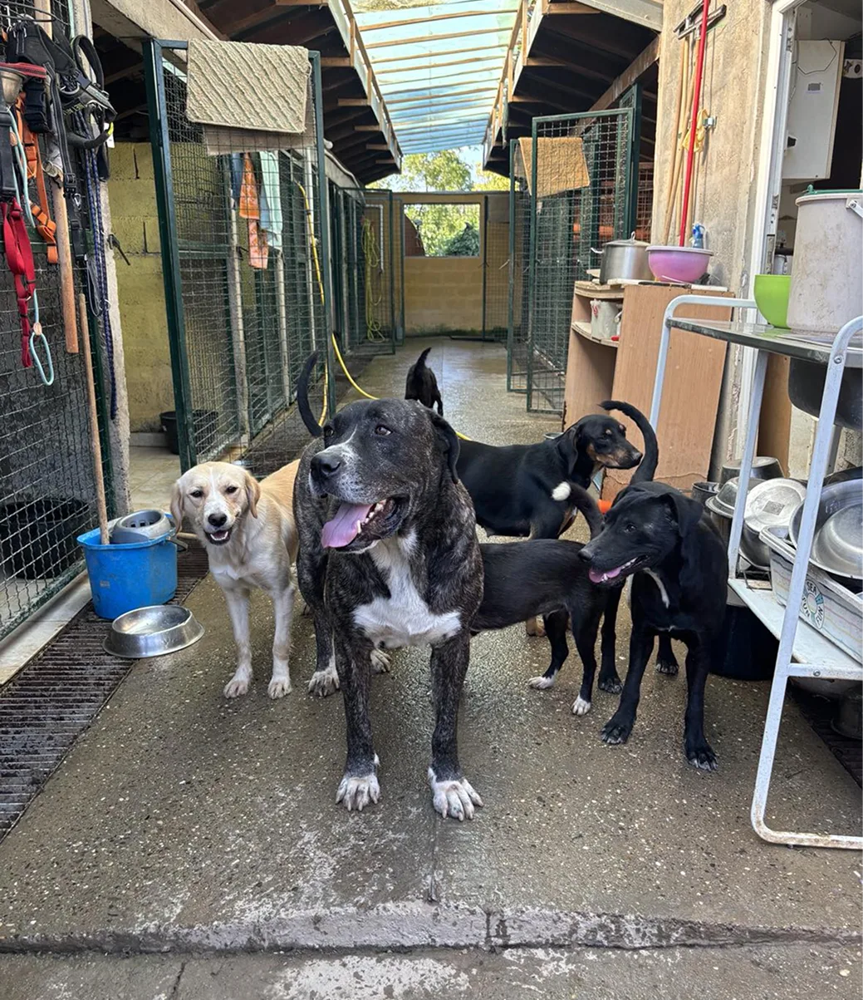
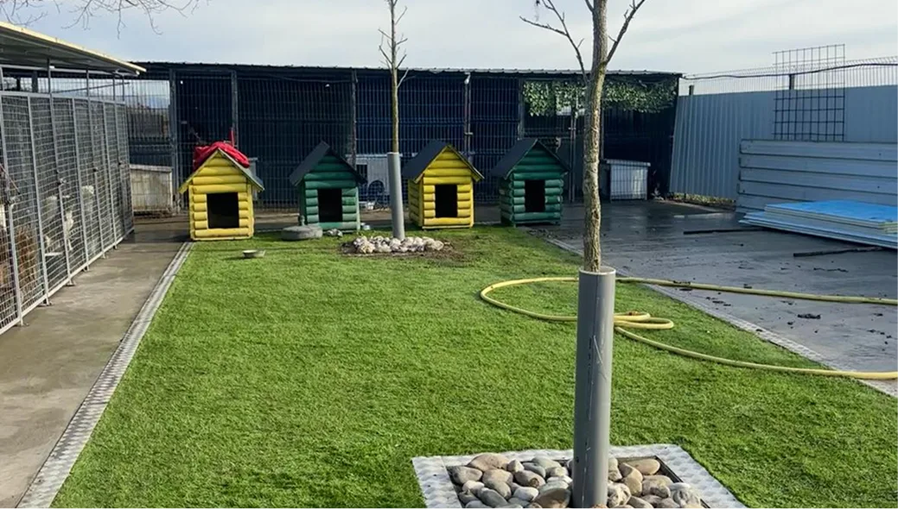
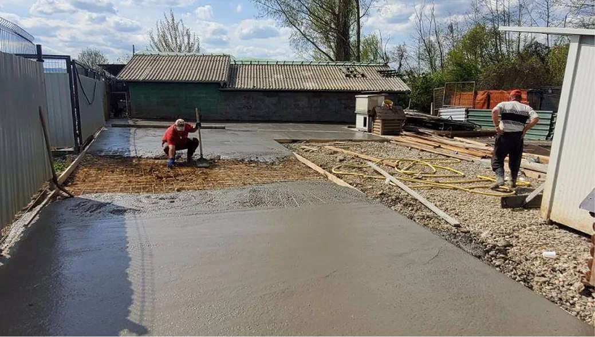
En nu zijn we hier
Vandaag is het asiel uitgegroeid tot een veilige, warme plek voor onze honden. Het terrein is groter, het oude gedeelte is opgeknapt en dankzij de hulp van velen hebben we kunnen uitbreiden.
Er is nu een ruime speelweide waar honden vrij kunnen rennen. De nieuwe kennels zijn steviger, hygiënischer en comfortabeler. We hebben stromend water, stroom en een infrastructuur die het dagelijkse werk draaglijker maakt.
Hoe wij werken
Elke hond doorloopt een zorgvuldig traject. Van de straat tot een warm thuis — stap voor stap.
Jouw bijdrage maakt het verschil
Wij ontvangen geen overheidssteun. Elke euro die we besteden aan voer, vaccins en operaties komt van donateurs en eigen zak.
Veilig betalen via Mollie